在Mac中如何直接预览压缩文件的内容？如何直接查看图片的尺寸？如何直接让js文件显示颜色高亮预览？你需要安装这些Quick Look插件。使用过Mac的都说比Windows系统有效率，但是具体体现在哪里很多人一时也回答不上来。作为一名设计师，并且是Mac的深度用户，我觉得最有效率的就是Mac的Quick Look功能。平时接触的都是最基础的，而实际上Quick Look比我们想象中的更为强大。
（干货来了，前排小板凳准备好！）
Quick Look是Mac的一个极为方便的功能，用户可以在不打开外部软件的情况下按下空格键快速预览文件。
对于常见文件，例如jpg、png、gif等图片格式，doc、txt、ppt等文档格式，sketch、ps、ai等设计师常用的源文件格式，都可以直接按键盘的空格键实现即时预览，再按空格键关闭，而不用像Win系统一样用鼠标双击打开再点击关闭按钮这种复杂操作。在平时繁忙的工作中，这个功能无疑极大地提升了我们的工作效率。
但是Quick Look也并不是万能的，Mac系统只是支持了基本格式的快速预览，还有很多其他格式无法预览，这时候就需要我们通过插件来扩展Quick Look的兼容性。
Quick Look的插件格式是.qlgenerator，本文接下来会介绍8个非常实用的预览插件，不管是设计师、程序员、还是普通用户，肯定有你所需要的。
我们拿WebP.qlgenerator插件安装为例子，过程很简单。
Mac电脑本身是无法识别WebP格式图片的，这个插件可以让Mac电脑识别WebP图片。
1、首先下载插件
链接：https://pan.baidu.com/s/18fflbWmjgTotOyX7o7Slrg
提取码: y8xm
这里提供了本文讲的8个插件，大家可以按照本文教程先下载WebP.qlgenerator。
2、移动插件到QuickLook目录
复制路径 /Library/QuickLook，打开Finder，依次选择：前往-前往文件夹-粘贴路径后回车，然后把下载的插件复制到这个目录，这时候会提示输入你的电脑密码。
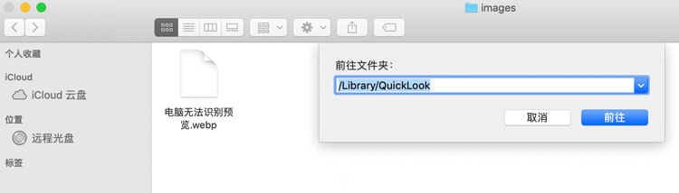3、用终端重启QuickLook
打开终端（Terminal），输入 qlmanage -r 并回车，之后出现resetting quicklookd提示就可以。
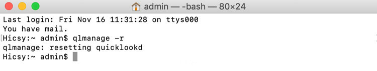我们再看看刚才无法预览的webp图片，已经可以预览了。
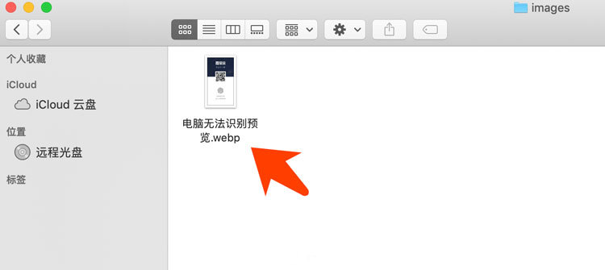到这里我们已经学会安装插件了，如果要删除也很简单，在目录中删掉对应的插件即可，只不过要再次输入密码。Mac一般视修改系统文件的操作为敏感操作，因此要进行安全确认。
除了刚才介绍的WebP插件之外，下面还有一些非常好用的插件会极大提升你的工作效率。
BetterZipQL
这个插件建议所有人安装，真的非常好用。
一般我们下载的压缩文件有rar、zip、7z等格式，要想知道里面包含的内容需要解压查看。如何在不解压的情况下查看里面的内容呢？BetterZipQL插件就能办到，直接按空格键就可以看里面的内容。
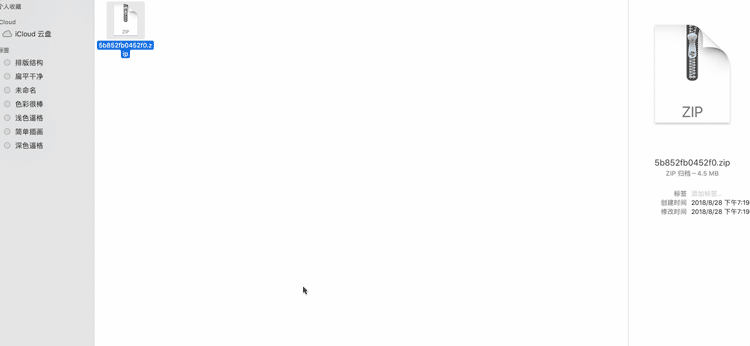QLImageSize
又是一个所有人都必备插件。
默认情况下，Mac电脑对于图片格式的支持是很多的，我们直接按空格键就可以预览，很方便。但是对于很多人来说还需要看图片的尺寸和体积，Mac默认预览是不显示的。
当然了，我们可以在Finder中，顶部栏选择显示-显示预览，就可以在Finder窗口中调出右侧预览信息直接查看，但是会占用显示范围。也可以在Finder空白处右键-查看显示选项-勾选显示项目简介，这样可以直接在图表上显示尺寸，但图片体积大小无法显示。
但是我接触的很多同事，甚至是身经百战的程序员，还是先鼠标右键图片，选择显示简介，打开弹窗去查看，然后再点击关闭。本来1秒钟的操作，却要花上好几秒的时间。
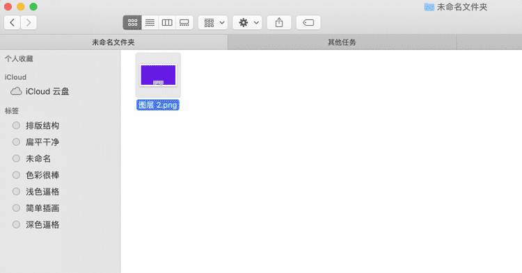QLImageSize就可以解决这个问题。安装后，直接空格键预览图片，顶部的名称前面会加上图片的尺寸和体积大小，非常方便。在快节奏的工作流程中，基本上1秒钟就能get到关键信息。
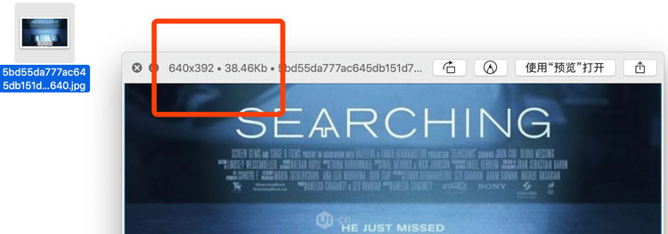PatternQuickLook
说到.pat格式，很多人都不太清楚是个啥。但是如果你经常下载Photoshop的图案填充就知道了。.pat是Photoshop的图案填充文件，用Photoshop打开后就可以自动添加到图案叠加列表中。
但是在下载.pat文件后，我们是看不到它到底包含什么图案的，只能载入到PS查看。这个时候就用上PatternQuickLook这个插件了，安装后只需要按下空格键，就可以快速查看Photoshop 的.pat图案填充文件。
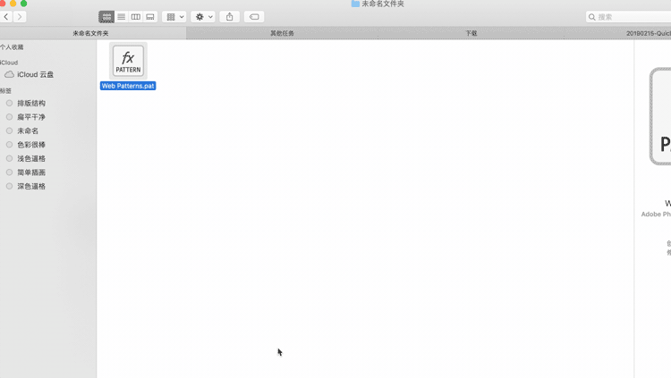QLMarkdown
这个插件可能对大部分不写文章的设计师来说有点小众，但是对于经常写文章的设计、运营、产品、技术同学来说非常实用。
QLMarkdown是专门来预览.md后缀名Markdown文件的。Mac默认无法预览，安装后即可按空格键预览。
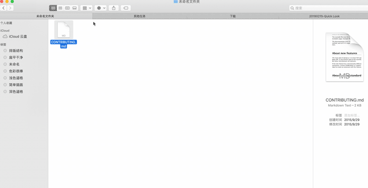那么问题来了，什么是Markdown呢？
Markdown是一种可以使用普通文本编辑器编写的标记语言，通过简单的标记语法，它可以使普通文本内容具有一定的格式。很多与编辑相关的工作都使用Markdown语法来进行写作，极大地提高了编辑和发布效率。
UI黑客的各种文章都是通过Markdown软件来进行编辑的，让写作、编辑、发布这一些列流程变得简单方便。而且Markdown语法非常易学，各位可以尝试下，后期UI黑客也会发布一些相关教程。
QLColorCode
这个插件对于程序员和会代码的设计师来说非常方便，可以快速查看高亮的代码，比如js文件、php文件。
默认情况下空格键预览js文件后，显示的全是黑色的代码文本，这个可不符合程序员平时的阅读习惯。一般程序员用的编辑器中都会内置代码主题，把各种类别通过颜色区分开。使用QLColorCode就可以把黑白色的预览改为符合程序员口味的彩色预览，提升代码可读性。
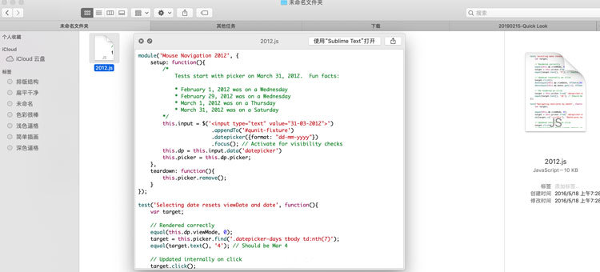QuickLookJSON
这个插件可以快速查看JSON代码文件，并使之彩色化，和QLColorCode插件一样的道理，只是额外增加对JSON代码的支持。
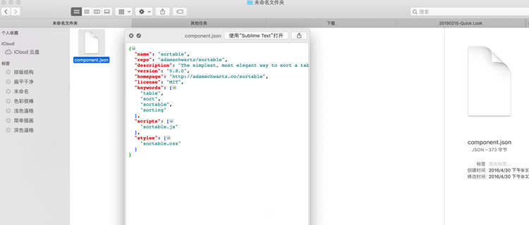QLStephen
在Mac中，有一些文本文件没有或者忘了后缀名，这样的话是无法预览和打开的。但是安装QLStephen插件后，就可以预览无拓展名的纯文本文件。
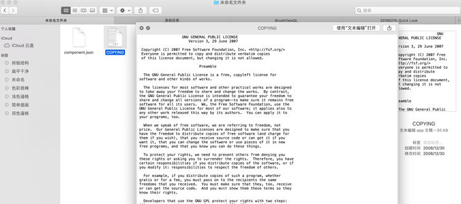最后希望这些插件能提升各位在Mac上的工作效率。